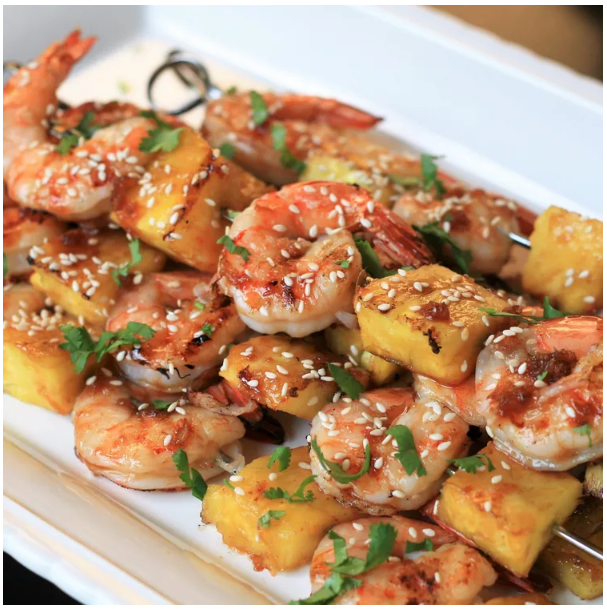

Salisbury Steak

Description
Grilled shrimps are nice, Teriyaki sauce is delicious.
Try adding both together!
Ingredients
- 5pc jumbo shrimps
- 1 teaspoon garlic
- 1 cup honey
Steps
- Combine water, soy sauce, brown sugar, honey, garlic, and ginger in a small saucepan
- Preheat an outdoor grill for medium-high heat and lightly oil grate
- Arrange skewers on the hot grate. Grill 2 to 3 minutes per side